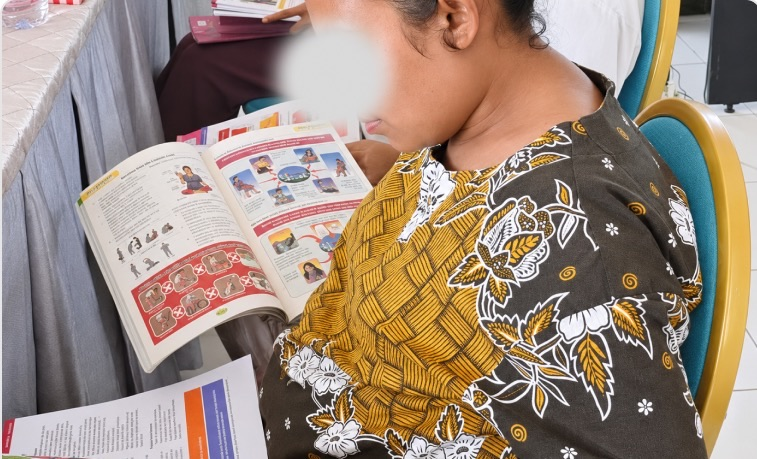

01Literacy, not layout, decided who used the book
Mothers with more education read the book on their own. Mothers with lower literacy relied on cadres and midwives, and some did not know what “ASI Eksklusif” meant, or that babies need only breast milk for the first six months.
Design implication: use familiar words, and design the book to be explained by cadres, not only read alone.